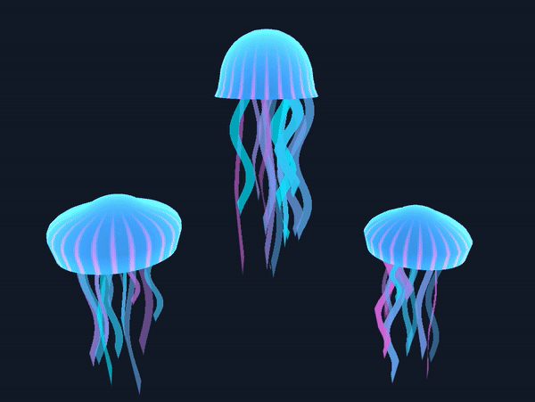
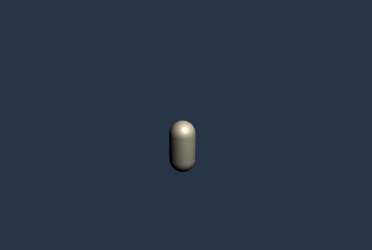

The shaders in this little collection are all created for Technical Art Challenges on Harry Alisavakis' tech art discord, where a new challenge is posted every fortnight

Potions
Mesh generation and shader / May 2021
Building on previous knowledge of mesh generation, I didn't just want to make a potion, but the potion bottle too.
I created basic bottle cylinders and used animation curves with some randomised values to give them them a more bottle like shape. And learnt a bit about "filling" meshes to create the potions
Read how I made it

Jellyfish
Vertex and fragment shaders / Mar 2021
The basis of the jellyfish is a vertex shader over a specially made dome mesh. It uses a gradient texture to push in and out the vertices replicating a jellyfish

Anime Effect
Particle Systems / Feb 2021
A powerup effect for a love spell. This uses three different particle systems, the burst on the floor, the rotating oval in the backboard and the sparkly hearts
I was trying to make some kind of themed powerup for a character.

Loading Screen
Particle Systems / Nov 2020
For the theme of "loading screen" I went with an animated symbol, for a fantasy game based around magic and spells.
The particle systems follow a moving gameobject that goes from point to point to create circles and stars

Replication
Post Processing / Oct 2020
After chatting to friends at work about what effect to replicate for this fortnight's challenge, I tried to copy the echolocation effect used in The Deep End Games' 2017 survival horror Perception.
They approved of the result, and even retweeted it!
I combined a ghostly blue fresnal glow on all the objects in the scene, with a post-processing script that uses a depth texture to mask out areas far away